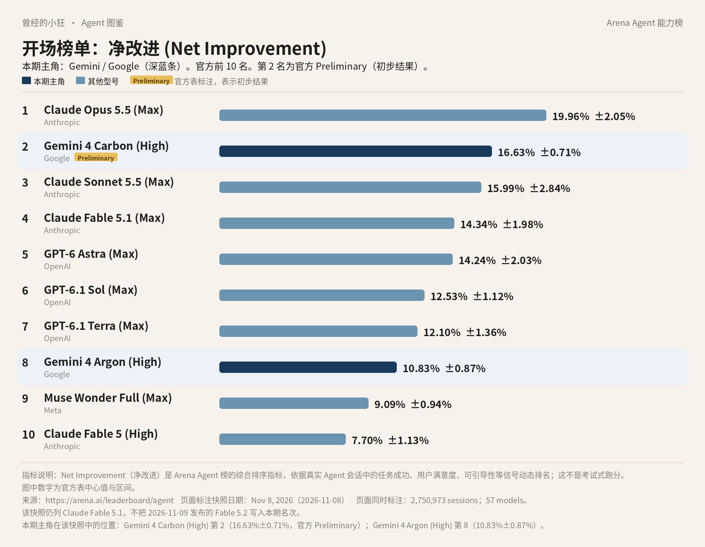

曾经的小狂 · Agent 图鉴 第 6 篇
前十里有两条是同一家里的，可不是同一个型号。先看这两条，再讲它们各自干什么。

全球 Agent 前十（Arena Agent 榜 · 净改进，2026 年 11 月 8 日快照）。深蓝条为本期主角。第 2 名带官方 Preliminary 标注。数据来源：arena.ai/leaderboard/agent。Fable 5.2 未进入本期快照。
这张仍是 Arena 的 Agent 综合榜，指标仍是「净改进」：真实会话里，助手把事情做完之后，综合表现到底好了多少。它不是成功率，也不是 Elo。快照日期是 2026 年 11 月 8 日，一共 2,750,973 场会话、57 个模型。数据在 arena.ai/leaderboard/agent。Claude Fable 5.2 是快照次日才发布的，没有进这期名次。
两条深蓝都来自 Google。靠前的是第 2 名 Gemini 4 Carbon (High)，净改进 16.63%±0.71%，官方标了 Preliminary，表示初步结果。再往下是第 8 名 Gemini 4 Argon (High)，净改进 10.83%±0.87%。同一份快照里还有更早的型号，不必画进这张前十图：第 17 名 Gemini 3.8 Flash (High) 是 2.38%±0.84%；第 34 名 Gemini 3.7 Flash (High) 是 −1.89%±0.90%；第 39 名 Gemini 3.1 Pro Preview 是 −4.32%±1.47%。后两行已经是负分，说明在这份综合指标上，它们相对基准是往下拉的，不是「还有正分只是没进前十」。
今天要讲的主角，是这两条背后的 Gemini。出品方是 Google DeepMind。消费端是 Gemini 应用和 Google AI 订阅，开发者走 Gemini API、Google AI Studio 和 Google Antigravity，企业走 Gemini for business。
Gemini 4 是这个系列的下一代。官方模型卡把它写成一套原生多模态的推理模型。多模态，可以先理解成它不只吃文字，也可以处理图像、视频等更多类型的输入。推理，就是它会先想清楚再给结论，而不是只会顺着把句子续完。
两款型号不要记成「一个新、一个旧」那么简单。它们的活不一样，到的时间也不一样，后面能在哪一档订阅里见到，也不一样。
Argon 先到。模型标识是 gemini-4-argon，从 2026 年 10 月 13 日起，对开发者和企业在 AI Studio 以及 Gemini 平台 API 上全球提供；Google AI Ultra 用户可以在 Google Antigravity 里用；Google AI Ultra 与 Pro 用户可以在 Gemini 应用和搜索的 AI Mode 里用。官方模型卡写：Argon 把前沿表现带给真实软件工程，法律、金融这类企业知识工作，以及网络防御。它被写成高效档：和 Carbon 相比，每轮更快，token 花费也更低。官方还写，Argon「仍是大多数软件工程与知识工作的理想选择」。
Carbon 更晚，也更吃智力。发布日是 2026 年 11 月 10 日，面向开发者、企业、科研和消费者开放。付费开发者和企业可通过 AI Studio 与 Gemini for business 的 API 使用；并向所有 Google AI Ultra 订阅者，在 Antigravity、Gemini 应用和搜索 AI Mode 里推送。官方把它写成 Gemini 4 里「最强」的型号，面向网络安全能力与长程 Agent 工作流，包括复杂知识工作、软件工程和科学推理。Carbon 是在 Argon 的基础上做出来的。官方的用法区分是：更吃智力的多步编码、调试与开放式科研，才轮到 Carbon；它会比 Argon 用更多 token，做更彻底的探索和校验。
这里的 Agent，仍然是「你说目标，它连续拆步骤、调用工具、把事情做完」。长程，指的是步骤多、周期长，不是单轮问答。token 是计费和容量的单位，先把它理解成「用了多少文字量」就行。Argon 的文档写：统一的输入加输出窗口是 100 万 token，也支持长解码到 100 万。文档标注的最近更新是 2026 年 10 月。API 能力包括：Agentic 视频理解、代码执行、Computer use（也就是让模型操作计算机）、文件搜索、函数调用、搜索和地图接地、Thinking、URL context。它不支持音频生成、图像生成和 Live API。Computer use 写在 API 和 AI Studio 的能力表里，不要自动理解成所有消费端用户都能用。
Carbon 的分发渠道里，还有一项 Fairwind Program，面向经过核验的网络安全防守方。这不是普通聊天账号默认打开的开关，要按官方公布的申请入口走。
若只用一句话来记官方区分：日常那些已经很复杂的软件和知识工作，官方仍把 Argon 写成更合适的选择；更长、更吃智力、需要更彻底探索和校验的活，才轮到 Carbon。两边都叫 Gemini 4，不要因为 Carbon 排在第 2，就默认所有事情都该上 Carbon。
谷歌在博客里报告过若干「排名第一」或领先的基准，例如 Argon 在 Vals Index，Carbon 在 CursorBench 4.0、WANDR、AutomationBench。这些是公司发布材料中的主张，要连板名一起读，不要改写成客观的「全球第一」。Arena 这份快照里，Carbon 带 Preliminary，也说明第 2 名仍是初步结果，不是一张已经钉死的成绩单。
普通人最常走的，是 gemini.google.com，或者手机上的 Gemini 应用。另外还有 Windows 和 macOS 桌面应用，地址在 gemini.google/desktop。官方写的快捷键是：Mac 上 Option + 空格，Windows 上 Alt + 空格。
计划要先分开记。免费档、Google AI Plus、Pro、Ultra，能见到的型号并不一样。Argon 在 Gemini 应用里，对应的是 Pro 与 Ultra。Carbon 在 Gemini 应用和搜索 AI Mode 里，对应的是 Ultra。也就是说，只开到 Pro，按官方对照能用 Argon；要用 Carbon，消费端还得再往上到 Ultra。
开发者走 Gemini API（付费档）、Google AI Studio，以及 Android Studio。Ultra 还可以在 Antigravity 和 AI Studio 使用这些前沿模型。企业走 Gemini for business、Google Antigravity，以及 CodeMender。科研人员可以申请 Antigravity 最高用量档，官方写免费 6 个月，但有资格、容量和遴选限制，而且是滚动开通。做网络安全防守的，可以申请 Fairwind Program。
Google Antigravity 是谷歌的 agentic 开发平台，面向把一组 Agent 组织起来写软件、做验证。Carbon 的发布博客预告了 /swarm：一条提示可以变成一组能实时跟踪的协同 Agent。2026 年 10 月 13 日的发布说明写，它已内置于 Gemini 的 macOS 应用，当时的条件是英语、个人 Google 账号与符合条件的工作账号、年满 18 岁，并且在 Antigravity 支持的地区。不在这些条件里，不要假定打开桌面应用就一定能用上。
消费端还有不少名字，最好不要拧成一个。Gemini Spark 是个人 Agent，和 Meta 的 Muse Spark 同名，但不是同一个产品。Gemini Omni 做视频创作。2025 年 11 月 18 日的发布说明里，曾经有一个实验工具就叫 Gemini Agent，当时在网页上向美国年满 18 岁的 Google AI Ultra 用户推出，可完成多步任务，使用 Gmail、日历、深度研究、Canvas，以及实时浏览，发邮件、下单这类关键动作需要确认。到了 2026 年，发布说明里更多出现的是 Gemini Spark、Tasks in Gemini、Chrome auto browse、Antigravity 这些名称。当前官方订阅页仍提到，Ultra 可优先使用包括 Agent Mode 在内的新功能。这些入口各有自己的地区和计划限制，不要把 2025 年的实验功能和 2026 年的 Ultra 功能，写成一个永远不变的产品名。
其他常被提到的，还有 Chrome auto browse（可代为完成网页任务，Pro 与 Ultra，美国与印度等，以官方说明为准），Tasks in Gemini（交给它规划步骤、跨站浏览、后台执行，Pro 与 Ultra，部分国家），Daily Brief，即将替换 Gems 的 Skills，Canvas，Deep Research，做图像的 Nano Banana，以及可连接的应用。2026 年 10 月 13 日的 Customize 说明写，可连接 40 多个应用与技能；多数应用是英语、美国，部分覆盖英语区、巴西、印度。Gemini Spark 在 2026 年 6 月 30 日的说明里，条件是英语、Ultra、18 岁以上、在支持国家，可在 macOS 上整理文件夹、用本地文件做文档、处理 Workspace 工作流。
消费订阅看的是美国页上的美元标价，出处是 gemini.google/subscriptions 和 one.google.com/about/google-ai-plans。中国区标价，我没有见到完整的官方表，不换算，也不猜。
Free 是每月 0 美元，官方列出 Flash-Lite、图像、Deep Research、Live、Canvas、Gems 等，存储是 15 GB。
Google AI Plus 是每月 4.99 美元，可用 Flash，官方称用量大约是 Free 的两倍，并含部分视频生成与 Daily Brief。存储这一项，同一页里出现过 400 GB 和 2 TB 两处不同表述，这里两处都记下，以当前订阅页为准。
Google AI Pro 月付 19.99 美元，年付页内出现 199.99 美元。这一档含 Gemini 4 Argon，用量大约是 Free 的四倍，有 Antigravity 的入门速率，也含 Chrome auto browse，存储是 5 TB。
Google AI Ultra 分成两档。Ultra 5x 每月 99.99 美元，官方写是最高档 Argon，并含 Carbon，用量大约是 Pro 的 5 倍，Antigravity 限额更高，存储从 20 TB 起。Ultra 20x 每月 199.99 美元，用量大约是 Pro 的 20 倍，Antigravity 限额最高，对照表上的存储是 30 TB。
官方写，Plus、Pro、Ultra 在一百五十多个国家和地区提供，页上出现过 150+ 和 160+ 两种写法，具体名单以官方国家列表为准。不要根据「一百五十多个」去推断中国大陆能不能买。多项功能要求年满 18 岁；Daily Brief、部分已连接应用、Chrome auto browse、Tasks in Gemini、AI Mode 中的 Carbon 等，只在美国或少数国家提供。Gemini 在 Gmail、Docs 里的语言和地区也有限制。
企业版 Gemini Enterprise 的起价页内出现过每席每月 21 美元（Business）。这和上面的个人 Google AI 计划不是同一张价目表，不要混着看。公司席位价、个人月费、API 按 token 计费，是三条不同的账单。
开发者如果走 API，还有一笔必须单独记住的价格。Argon 在 2026 年 10 月 13 日的博客、Carbon 在 2026 年 11 月 10 日的博客里，都写了相同的入门价：每百万 tokens，输入 2 美元，输出 10 美元。Argon 博客写，缓存输入打九五折，也就是入门期大约每百万 0.10 美元，仍以谷歌定价页为准。入门期到 2026 年 11 月 30 日结束，自那以后是输入 4 美元、输出 20 美元。官方脚注写明，这适用于「面向公众访问的」Argon 和 Carbon 型号。眼下仍处在入门价窗口里，但如果你在 11 月 30 日之后再下单，就要改按正价来算。
Carbon 因为网络能力更强，官方强调加强了滥用防护，以及针对间接提示注入的防护，并提供 Fairwind 这类防守方通道。间接提示注入，可以先理解成：有人把指令藏在网页或文件里，想让模型在你不知情时改做别的事。Argon 和 Carbon 都有模型卡和安全报告，细节以模型卡为准。
企业数据这一头，Gemini Enterprise 页称客户数据不用于训练谷歌模型，也不用于广告。消费端的训练和隐私规则，以 Gemini Apps 的隐私说明为准，不要把企业条款套到个人账号上。较早的发布说明里写过 Temporary Chat：不进历史，不用于训练或个性化。若你要依赖这一条，建议再看一眼当前帮助中心是否仍这样写。
中国大陆是否提供 Gemini 应用、Google AI 订阅或 API，官方页没有单独写「在中国大陆提供」，也没有写「不提供」。这里不猜，以当时的产品入口、结账页和国家列表为准。
第一次用，路径其实很短：打开 gemini.google.com 或官方应用，用 Google 账号登录，先用免费档看能不能对话。要用 Argon，再看 Pro 或 Ultra。要用 Carbon，按官方说明是 Ultra。写代码、要把一组 Agent 一起跑起来，再去看 Antigravity，并先确认语言、年龄和地区是否在支持范围里。开发者走 AI Studio 和付费 API。做科研或网络安全防守的，分别走官方公布的申请入口。
有几种情况，不必急着付钱。如果你要的只是免费档里的日常对话和已列出的基础能力，不必先订 Ultra。如果你订的是 Plus，却默认能在应用里用上 Argon 或 Carbon，按官方对照，Argon 从 Pro 起，Carbon 在应用和搜索 AI Mode 里是 Ultra。如果你所在地或年龄不在某项功能的开放范围，比如部分能力仅美国或少数国家、多项功能要求 18 岁以上，不要只看总价去下单。API 入门价有截止日期，过了 11 月 30 日还按 2 美元、10 美元去做预算，会和正价对不上。
同类产品里，本连载已经写过 Claude、ChatGPT、Grok、Cursor，上一篇是 Kimi。都是「自己有模型，再做成能聊天或能干活的产品」。这里只点名，不评哪个更好。
先记住这几句就够了。这份快照里，Gemini 4 进了前十，Carbon 排第 2，带 Preliminary；Argon 排第 8。Argon 面向大多数复杂的软件和知识工作，2026 年 10 月 13 日先到；Carbon 面向更长、更吃智力的活，11 月 10 日才到，消费端主要在 Ultra。API 入门价只到 11 月 30 日。钱按美元官方标价来，国内能不能订，以官方名单和结账页为准，我不猜。
产品会改价、改规则、改默认模型。你要下单或安装前，再打开 gemini.google/subscriptions 和对应的模型说明看一眼。
署名：刀哥
来源清单：
https://arena.ai/leaderboard/agent
https://arena.ai/blog/agent-arena-methodology
https://blog.google/innovation-and-ai/models-and-research/gemini-models/gemini-4-carbon-now-available/
https://blog.google/innovation-and-ai/models-and-research/gemini-models/introducing-gemini-4-argon/
https://deepmind.google/models/model-cards/gemini-4-carbon/
https://deepmind.google/models/model-cards/gemini-4-argon/
https://aistudio.google.com/docs/models/gemini-4-argon
https://gemini.google/subscriptions/
https://one.google.com/about/google-ai-plans/
https://gemini.google/us/release-notes/?hl=en
https://gemini.google/desktop/